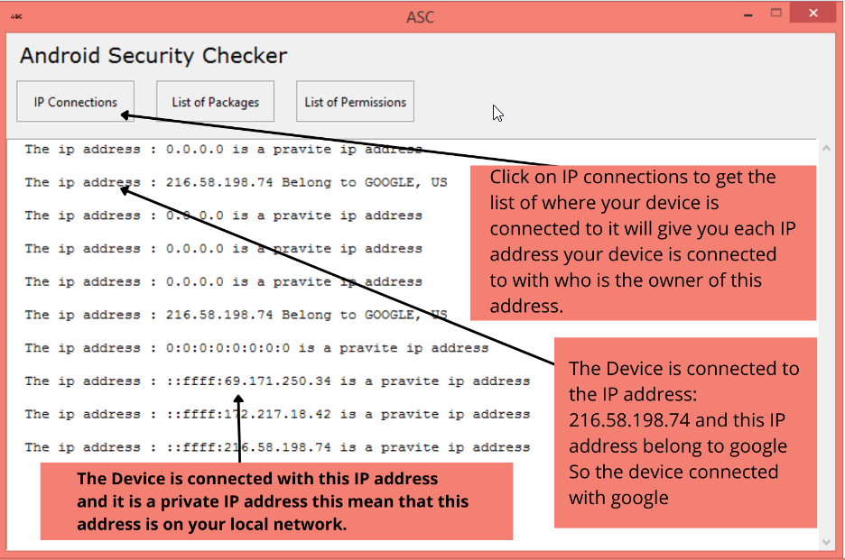
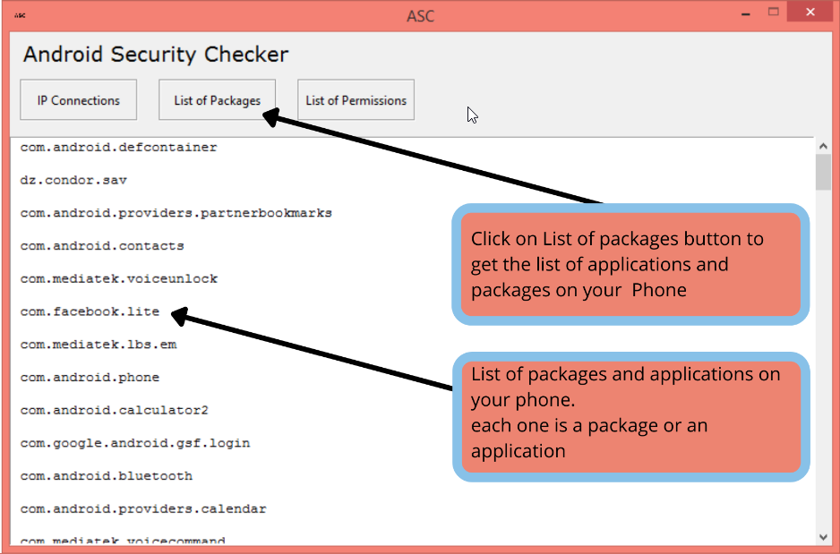
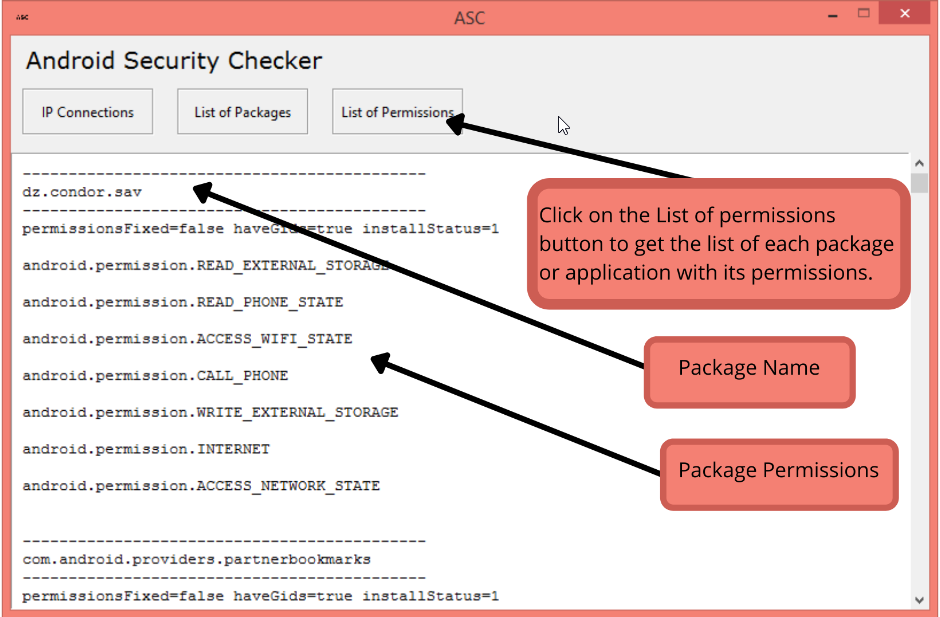

How to Use Android Security Checker
This Guide will show you how to use Android Security Checker Step by step so let's dive into it.
Before you can use android security checker you will need to install android debug bridge(adb) and you will need also Enable adb debugging on your device too.
How to install android debug bridge
First you will need to go and open link bellow and then follow the instructions in the video
Click here Get android debug bridge
After installing adb you will need to enable Developer Options and Enable USB Debugging on Android
before you can connect your phone to the pc and start usnig adb and android security checker you will need to enable developer options and enable USB Debugging on the device...
Click here and read how to enable them...
If you are using samsung phone then read this article it will show you how to enable them...
if you have enabled them just plug your phone to the PC and you are ready to go....
How to see where your device is connected to:
If you want to see where your device is connected to…
Then click on the IP connections Button and the application will show you A list of IP addresses where your device is currently connected to.
You will see a list of IP addresses with its owners…
Sometimes you will find a private IP address which means that this IP address is on your devices or on your local network…
How to see the list of packages and applications installed on your device:
If you want to see the packages and applications installed on your android device.
Then just click on the List of Packages Button and the application will show you a list of all packages and applications installed on your phone.

How to see permissions granted to each package and application on your device:
If you want to see permissions granted to each application and package on your device…
Then you can do it just by clicking on List of Permissions button and the application will show you each package with its permissions…
And also it will show you each application on your device with its permissions.
